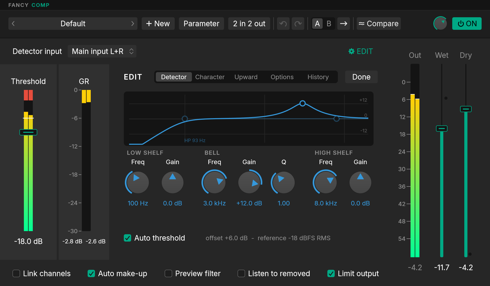
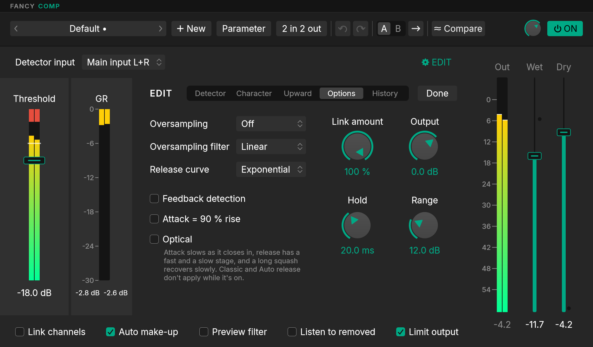

Fancy Comp: Phase 4 Wave 2 mockup (six-band detector EQ and link modes)
docs/comp.md, Phase 4 Wave 2: six-band sidechain EQ (item 13) and link modes (item 14), Decisions all A. New things in dashed yellow, on the plugin's real screenshot (1x coordinates).
1 · The Detector page: six bands, one edited at a time
Band tabs 1 to 6 sit in the curve's top-left corner (bands that are Off are dimmed: 5 and 6 here). Each band that is on has a handle on the curve; here band 4 is a bell at 400 Hz, −4 dB, added to today's three. Under the curve, the selected band's Type (Off, Low shelf, Bell, High shelf), Freq, Gain and Q (Q only for Bell), and the cut slopes for the main window's Highpass and Lowpass knobs: 12, 24 or 48 dB/oct.

1
2
3
4
5
6
HP 93 Hz · 24 dB/oct
BAND 2
Type
Bell
CUT SLOPES
Highpass
24 dB
Lowpass
12 dB
Off
Low shelf
✓ Bell
High shelf
Bands 1 to 3 are today's low shelf, bell and high shelf, with their values; 4 to 6 start Off. A band that is Off or at 0 dB isn't run, so saved projects render as before, to the bit. Clicking a handle selects its tab; dragging moves Freq and Gain, the wheel sets Q. Auto threshold stays where it is, below.
2 · The Options page: Link mode, and the GR meter labelled M and S
A Link mode dropdown (Stereo, Mid/Side, M>S, S>M; Stereo by default) under Hold and Range, the free space nearest Link amount, which now links mid and side in the M/S modes. While the mode isn't Stereo, the GR meter's read-outs are labelled M and S.

Link modeMid/Side
M −2.8 S −2.6
Stereo is today's sound, to the bit. M>S compresses only the side from the mid's level, so the width narrows while the vocal is loud; S>M the other way round. Each mode's tooltip says this in one line.